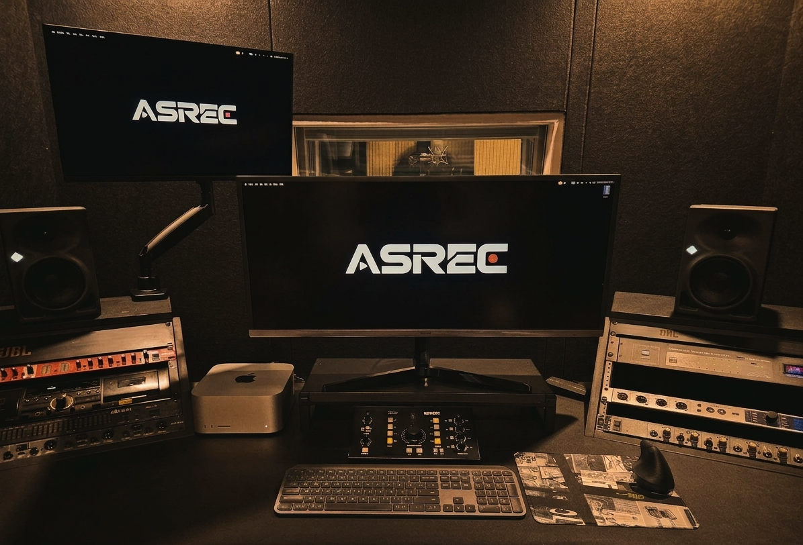
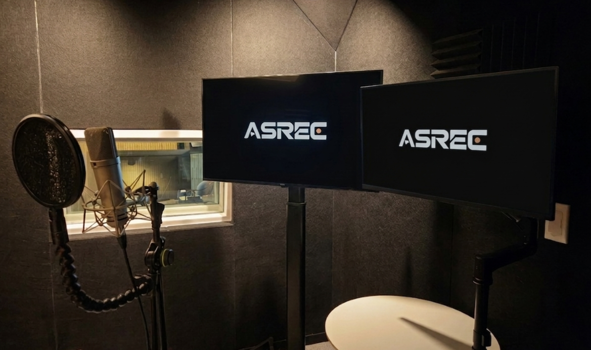
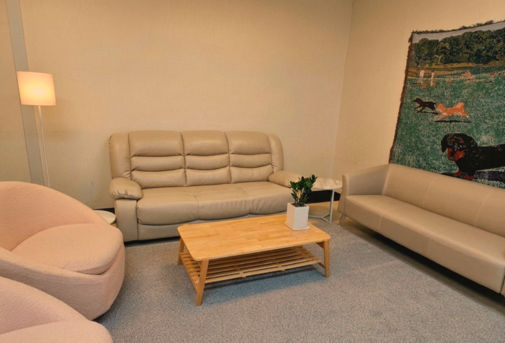

Greetings from Asrec Studio!
After much preparation, Asrec Studio is finally officially open! 🎉
As a team of game enthusiasts dedicated to creating the ultimate voiceover experience, we are incredibly excited to start this journey.
Today, for our partners and voice actors who are curious about our new space, we've prepared a virtual tour — taking you from the heart of our studio, the Control Room, to our cozy Lounge!
Ready to take a look? Let's dive in! 🚀
🎧 01. The Control Room: Where Every Sound Comes to Life

Control Room
First up is the Control Room, the space where our director's passion truly ignites!
True to its name, this is the hub that oversees the entire recording process. It's not just a place to hit the "record" button; we've meticulously calibrated every detail to capture even the finest nuances — from a faint breath to a subtle emotional tremor. Our optimized acoustic environment is designed to catch even the slightest hint of noise.
Moreover, this is a space where creative ideas "spark" in real-time. ⚡ During recording, we often put our heads together with script adapters and clients on the spot to bring out that extra "flavor" in a character. This immediate feedback loop and on-the-fly adjustments allow us to create results far more vibrant and natural.
It's more than just a place to capture audio — it's the heart of Asrec, where the overall quality of a project is built up in real-time!
🎙️ 02. The Recording Booth: Where Performance Becomes Reality

Recording Booth
Next up is the Recording Booth, the very place where characters are brought to life! 🎙️
This is a dedicated "Space of Immersion," meticulously designed to allow voice actors to lose themselves completely in their roles.
To answer the question, "How can we bring out the best performance in the most comfortable setting?" our booth features an optimized acoustic environment — one that feels spacious and open, yet captures sound with absolute precision. High-performance microphones and gear capable of capturing even the slightest emotional tremor are standard at our studio.
Most importantly, we focused on the perfect synergy between the director and the actor. We've created a monitoring environment that allows for seamless feedback from the control room, enabling actors to maximize their focus and fine-tune every subtle nuance of their delivery.
It's no exaggeration to say that a character is truly born here, in a booth that breathes soul into every single breath!
☕ 03. The Lounge: A Cozy Sanctuary to Catch Your Breath

Asrec Lounge
Last but not least, let us introduce our cherished sanctuary — the Lounge!
Recording requires intense focus, which can be quite draining. To ensure our voice actors and clients can relax and recharge, we've prepared this "mini-getaway" right here within Asrec Studio! 🙌
More than just a breakroom, this is a vital space for refreshing the mind. It's often over a cup of coffee here that brilliant ideas for script tweaks or character tones suddenly "pop up" during casual conversation. 💡
(We also have a coffee machine ready for you! ☕)
Unwinding on a comfortable sofa under soft lighting helps everyone shake off the tension, leading to much more vibrant performances once back in the booth. We plan to keep filling this space with inspiration for everyone who visits — stay tuned for a collection of game merch and consoles, where you can play and de-stress during breaks! 🎮
How did you enjoy our brief studio tour?
We truly hope you'll get a chance to experience the ultimate voiceover environment, something that photos simply can't capture in full. Our studio is always open, so please feel free to drop by whenever you'd like! 😊
We are incredibly excited about the countless "joyful sounds" we'll create here at Asrec, and we look forward to the amazing projects we'll build together with you!
T: 02-852-0302 | E: contact@asrec.co.kr